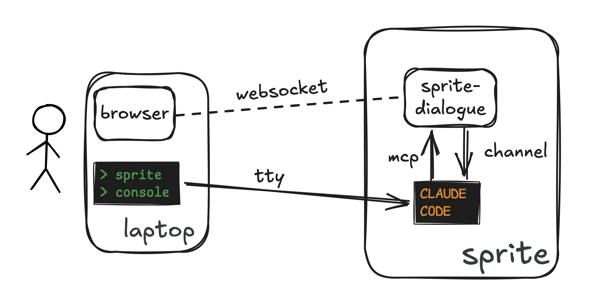

sprite-dialogue
A Claude Code plugin that mirrors the chat to a browser tab — with two-way image support — to make Claude Code on a Sprite more ergonomic.

What it does
- Live text mirroring — Claude's replies appear in the browser as they're produced. No clicks, no polling.
- Two-way images — paste, drop, or attach screenshots in the browser; Claude reads them as channel notifications. Claude can send images back via the
send_imageMCP tool. - No clipboard hacks, no SSH tunnels — the browser and the Sprite are bridged via WebSocket on a port the Sprite forwards to your laptop automatically.
- Terminal stays primary — the browser is a parallel surface for what doesn't fit in a TTY (screenshots, rendered markdown), not a replacement.
Quickstart
Inside a Claude Code session on the Sprite:
/plugin marketplace add spritetools/sprite-dialogue
/plugin install sprite-dialogue@sprite-dialogue
/reload-pluginsExit Claude (Ctrl-D) and relaunch with the channel flag:
claude --dangerously-load-development-channels plugin:sprite-dialogue@sprite-dialogue
The --dangerously-load-development-channels flag is required because Claude Code's channels feature is still in preview — that's the mechanism sprite-dialogue uses to push browser messages and screenshots back into your Claude session.
The UI URL is written to /tmp/sprite-dialogue-url:
cat /tmp/sprite-dialogue-urlOpen that in your laptop browser. sprite console auto-forwards bound ports, so the URL just works.
Status
Working but early — see the GitHub repo for source and TODO.md for known issues and planned enhancements.